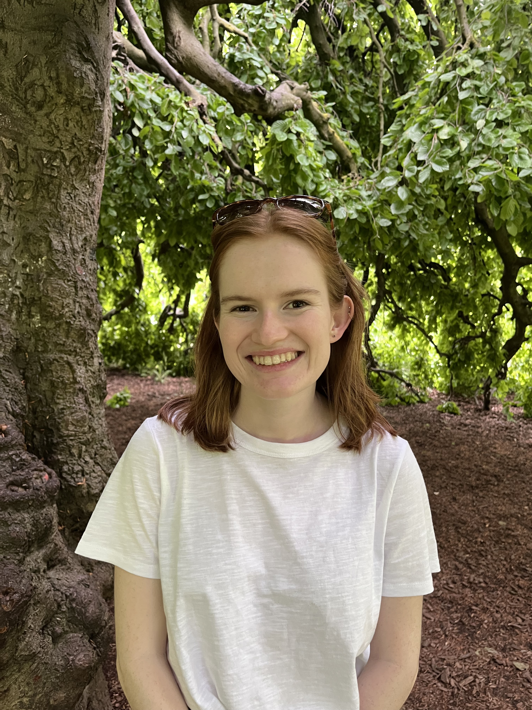

Natalie Allen
PhD Student in Conservation Genomics

About Me
I am a PhD student specializing in conservation genomics, where I apply cutting-edge genomic techniques to address critical challenges in wildlife conservation and biodiversity preservation.
My research focuses on using genomic data to inform conservation strategies, understand population dynamics, and preserve genetic diversity in threatened species.
Gallery